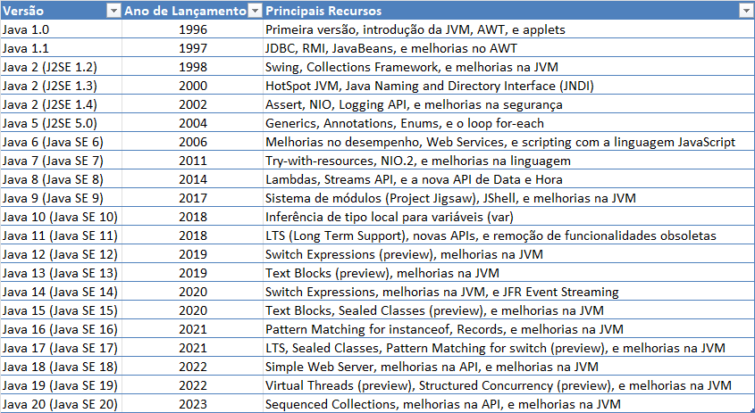

Evolução Da Linguagem Java
Evolução da linguagem Java.
Evolução da Linguagem Java
Java é uma das linguagens de programação mais populares e amplamente utilizadas no mundo. Criada pela Sun Microsystems* [vide rodapé] em 1995, ela se destaca por sua portabilidade, robustez e segurança.

Evolução da linguagem Java do ano de 1996 até 2023.
Principais Características
-
Orientação a Objetos: Java é uma linguagem orientada a objetos, o que facilita a organização e reutilização do código.
-
Portabilidade: O lema \"escreva uma vez, execute em qualquer lugar\" resume bem a capacidade do Java de rodar em diferentes plataformas sem a necessidade de recompilação.
-
Segurança: Java oferece um ambiente seguro para a execução de aplicações, com recursos como a verificação de bytecode* [vide rodapé] e a gestão de memória automática.
Componentes da Plataforma Java
-
JDK (Java Development Kit): Conjunto de ferramentas necessárias para desenvolver aplicações Java.
-
JRE (Java Runtime Environment): Ambiente necessário para executar aplicações Java.
-
JVM (Java Virtual Machine): Máquina virtual que permite a execução do bytecode Java em qualquer plataforma.
Aplicações do Java
Java é utilizado em uma ampla variedade de aplicações, desde aplicativos móveis (Android) até sistemas corporativos e aplicações web. Sua versatilidade e robustez fazem dele uma escolha popular entre desenvolvedores.
Conclusão
A tecnologia Java continua a evoluir, mantendo-se relevante e poderosa no desenvolvimento de software moderno. Sua combinação de portabilidade, segurança e orientação a objetos garante que Java permaneça uma escolha sólida para desenvolvedores em todo o mundo.
Notas:
Bytecode é um conjunto de instruções intermediárias que a máquina virtual Java (JVM) pode executar. Quando você compila um programa Java, o código fonte é transformado em bytecode, que é armazenado em arquivos com extensão .class. Esse bytecode é independente da plataforma, o que significa que pode ser executado em qualquer sistema que tenha uma JVM, tornando o Java uma linguagem altamente portátil.
Sun Microsystems era uma empresa de tecnologia americana conhecida por desenvolver o Java, uma linguagem de programação que permitia que aplicativos funcionassem em qualquer dispositivo, independentemente do hardware ou sistema operacional. A empresa também era reconhecida por seus servidores, estações de trabalho e o sistema operacional Solaris. Sun Microsystems desempenhou um papel crucial na evolução de várias tecnologias de computação, incluindo Unix e computação distribuída.